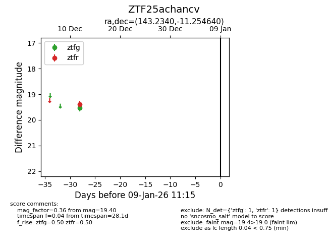
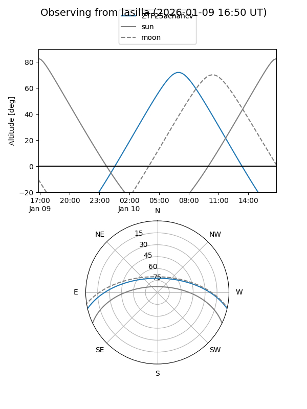

ZTF25achancv
Target ZTF25achancv at 2026-01-09 12:49
Aliases and brokers:
FINK: link
Lasair: link
ALeRCE: link
alt names
ZTF25achancv (ztf,fink_ztf)
Coordinates:
equatorial (ra, dec) = 143.2340,-11.25464
equatorial (HMS+DMS) = 09:32:56.16,-11:15:16.70
galactic (l, b) = (244.7390,+28.45294)
Flags:
Photometry:
last ztfg=19.52, ztfr=19.40
1 ztfg, 1 ztfr detections
Lightcurve

Visibility


Additional plots